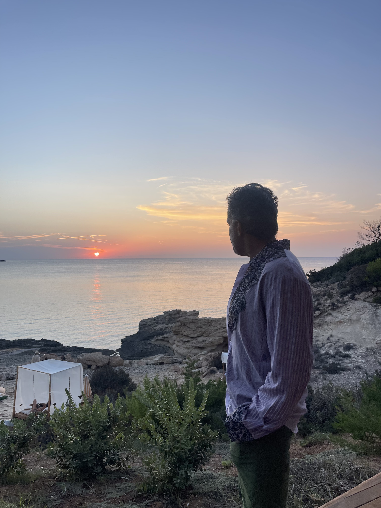
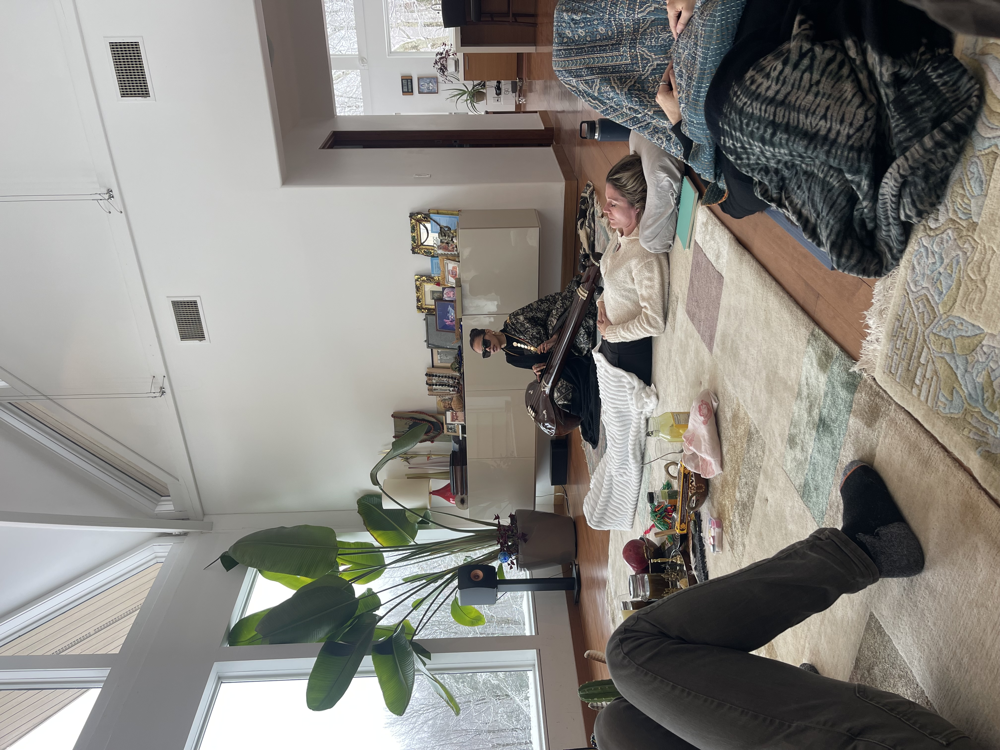
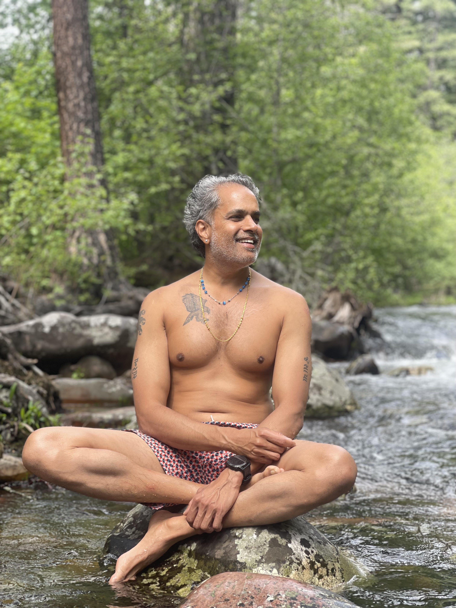

My Story
My Story

I spent twenty years in finance and building a company. Today I bring together founders, executives and conscious leaders who want to put their capital and talent behind some of the world's biggest problems. Mental wellness. The health of the planet.
I believe real change happens in community. In honest rooms, with people willing to do the inner work and the outer work.
About twenty years in high-pressure finance at OppenheimerFunds and Flextrade, then as the founder of my own company. On paper it worked. Underneath, I was carrying stress I never stopped to look at.
A 10-day Vipassana retreat. Long stretches of silence and nature. Deep study of parts work, somatic practice and other wisdom traditions. I stopped treating the strain in my body as a flaw and started listening to it. That changed everything.
I'm building a community of founders, executives and conscious human beings who want their success to mean something.
We gather through live events: retreats, summits, gala dinners and conferences around the world. Each one is a portal into deeper awakening, connection and personal mastery.
Alongside that, I advise and back companies working on mental wellness and earth preservation, and I support foundations focused on depression, PTSD and loneliness. I'm also helping build Alumina Tulum, a wellness resort opening in early 2027 that will be a home for these gatherings.
Something new is taking shape. More soon.
Vipassana, Kundalini Yoga, plant medicine ceremony, parts work through my Heart Method, somatic practice, nature immersion
Venture capital, fintech, fractional CEO, asset management, founder and advisor
B.S. Finance and Marketing, NYU Stern. Youth Mental Health Aide certified



